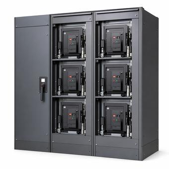

Panelboard, Switchboard or Switchgear: Where the Line Is
The ampere thresholds everyone quotes do not exist, and the published figures contradict each other because they are folklore. The real division is which standard the assembly is listed to, and whether it has a short-time rating at all.

Key takeaways
- No ampere rating separates these three. The published thresholds disagree with each other because none of them comes from a standard.
- The listing standards do the dividing: UL 67 for panelboards, UL 891 for switchboards, UL 1558 for low-voltage switchgear.
- Switchgear has a short-time rating of 30 or 60 cycles. UL 891 switchboards have none, and are rated to withstand short-circuit current for three cycles.
- Only UL 1066 power circuit breakers may be used in UL 1558 switchgear. Switchboards may use UL 489 molded-case or insulated-case breakers, UL 1066 breakers, or fused switches.
On this page · 8 sections
The threshold that does not exist
Search this question and you will be told the dividing line is 1,200 A. Or 1,600 A. Or 600 A, or 2,000 A, depending on the page. The figures disagree because none of them comes from a standard; they are rules of thumb that hardened into quoted fact.
The ranges overlap, which is the clearest demonstration that no threshold is doing any work. Circuit breaker frame ratings in low-voltage switchgear typically run from 800 A to 6,000 A. A single switchboard section may hold breakers from around 20 A up to 1,200 A or more. A 1,000 A assembly can legitimately be either one, and knowing it is 1,000 A tells you nothing about which it is.
What the NEC definitions actually turn on is construction and mounting. A panelboard is a panel or group of panel units designed for assembly as a single panel, including buses and overcurrent devices, and designed to be placed in a cabinet or cutout box. A switchboard is a large panel, frame or assembly of panels carrying switches, protective devices, buses and usually instruments, and is not intended for installation in a cabinet. The distinction is between something that goes in a box on a wall and something that stands on the floor as its own assembly — not between two current ratings.
Article 408 covers all three, and since the 2017 edition it has been titled for all three: switchboards, switchgear and panelboards. Switchgear being named separately there is itself a hint that it is a distinct category rather than a large switchboard.
The listing standards
This is where the question gets a decisive answer, and it is the part most comparisons skip or get backwards.
Each assembly is listed to its own standard. UL 67 covers panelboards. UL 891 covers switchboards. UL 1558 covers metal-enclosed low-voltage power circuit breaker switchgear. These are not tiers of the same document; they are separate standards with different construction and test requirements, and an assembly is built and listed to one of them.
The breakers inside follow their own standards, and this is the constraint with the most practical bite. UL 489 covers molded-case and insulated-case circuit breakers. UL 1066 covers low-voltage power circuit breakers. Only UL 1066 power circuit breakers may be used in UL 1558 switchgear. A switchboard is more permissive: it may use UL 489 breakers, UL 1066 breakers, or fused switches.
So the relationship is asymmetric in a way the ampere-threshold framing completely obscures. Switchgear is constrained to one class of breaker. A switchboard can be built with the same power circuit breakers a switchgear lineup uses, or with molded-case breakers, which is why two switchboards can differ from each other more than one of them differs from switchgear.
The short-time rating
If you want one technical fact that separates switchgear from a switchboard, this is it.
A UL 891 switchboard is rated to withstand short-circuit current for three cycles, and has no short-time rating. UL 1558 switchgear is rated to withstand short-circuit current for four cycles, and additionally carries short-time ratings of 30 or 60 cycles. UL 891 does not cover switchboards with short-time current ratings at all — the capability is outside the standard’s scope, not merely absent from a given product.
The consequence is selective coordination. A short-time rating is what allows an upstream device to hold in deliberately, without tripping, while a downstream device clears the fault. That requires the upstream assembly and its breaker to survive the fault current for the duration of the delay, which is what the 30 or 60 cycle rating certifies. Three cycles does not leave room for a meaningful short-time delay, so coordination in a switchboard depends on other mechanisms and is correspondingly harder to achieve across several levels.
Where coordination is mandatory rather than desirable — elevator circuits, emergency systems, health care essential electrical systems — this is frequently the fact that decides the equipment, long before anyone looks at an ampere rating. It is also why the answer to “can we use a switchboard instead?” is sometimes a flat no for reasons that have nothing to do with capacity.
Construction and maintainability
The physical differences follow from the standards rather than the reverse, and they are what you actually live with.
In switchgear, sections are separated by complete metal barriers, and the breakers are drawout: a breaker can be racked out and removed for maintenance or replacement. UL 1066 power circuit breakers have replaceable parts and are designed to be maintained. Switchgear generally requires both front and rear access, is typically at least 60 inches deep, and can carry protective relays and intelligent controls.
In a switchboard, devices are group-mounted without isolation between them. Most are fixed-mounted, though some switchboards use drawout UL 1066 breakers. Depth typically runs 24 to 60 inches. Most molded-case breakers cannot be disassembled, so a failed device is replaced whole rather than repaired. Switchboards generally do not carry relaying or intelligent controls.
Two containment rules cut the other way and surprise people. A switchboard can contain a panelboard, and can contain a transfer switch. Switchgear cannot include either, although a transfer scheme can be implemented through its internal logic and breaker controls. So the more capable assembly is the more restrictive one about what may be built into it.
The trade is straightforward once stated: a switchboard costs less and offers less maintainability, and switchgear costs more, takes more room, and can be maintained and coordinated.
What rear access does not tell you
A test you will see offered repeatedly is rear access: panelboards are accessible from the front only, switchboards from the rear as well. It is worth knowing why this is a weaker discriminator than it looks.
The wording appears in both code and standards material, and it describes what these assemblies are generally like rather than setting a requirement. In current equipment it has drifted. Many modern switchboards are designed to be entirely front-accessible, which is often the reason they are chosen for a tight electrical room. Switchgear, meanwhile, generally does need rear access. So an assembly you can only reach from the front may be a panelboard or a contemporary front-accessible switchboard, and the one needing rear clearance is as likely to be switchgear as a switchboard.
Use it as a clue about an installation, not as a classification. The listing label settles what the assembly is, and the required working space comes from NEC 110.26 based on what is actually there rather than from the category name.
Choosing between them
In practice the decision is made by a short series of questions, in roughly this order.
Does the design require selective coordination through this level? If so, the short-time rating points at switchgear and the question is largely settled. Does the equipment need to be maintained in place over a long service life, with breakers removable without de-energising the lineup? That points the same way. Is there a protective relaying or control scheme to house? Again switchgear.
If none of those apply, a switchboard is the ordinary answer for floor-standing service and distribution equipment, and a panelboard is the answer for branch-circuit distribution in a cabinet. Cost and footprint then matter, and both favour the switchboard.
What should not drive the decision is the service size on its own. A large service does not require switchgear, and a moderate one does not rule it out.
Common mistakes
Quoting an ampere threshold as the dividing line, when the published thresholds contradict each other and none comes from a standard. Treating switchgear as simply a bigger switchboard, which gets the breaker constraint backwards — switchgear is the more restrictive assembly about what may go in it. Specifying a switchboard where the design needs selective coordination through that level, then discovering the three-cycle withstand leaves no room for a short-time delay. Assuming front-only access proves an assembly is a panelboard. Assuming a switchboard cannot contain a panelboard or a transfer switch, when it can, or that switchgear can, when it cannot. Using the words interchangeably on a drawing and a submittal, which is how the wrong standard ends up on the order.
Frequently asked questions
What is the difference between a switchboard and switchgear?
The listing standard and the short-time rating. Switchboards are listed to UL 891 and withstand short-circuit current for three cycles with no short-time rating. Switchgear is listed to UL 1558, withstands four cycles, and carries short-time ratings of 30 or 60 cycles, which is what permits deliberate time delay for selective coordination. Switchgear also uses only UL 1066 power circuit breakers, has drawout breakers and barriered sections, and is built to be maintained.
Is there an ampere rating that separates a panelboard from a switchboard?
No. The thresholds commonly quoted, usually 1,200 A or 1,600 A, do not come from a standard, and published sources disagree with each other. The NEC definitions turn on construction and mounting: a panelboard is designed to be placed in a cabinet or cutout box, while a switchboard is a freestanding assembly not intended for cabinet installation. Ampere ranges for switchboards and switchgear overlap substantially.
What is a short-time rating and why does only switchgear have one?
It is the ability to carry fault current for a defined interval without tripping and without damage, so an upstream device can hold in while a downstream device clears the fault. That is the mechanism behind selective coordination. UL 1558 switchgear carries short-time ratings of 30 or 60 cycles. UL 891 does not cover switchboards with short-time current ratings at all, and a three-cycle withstand leaves no room for a meaningful delay.
Can a switchboard contain a panelboard?
Yes, and it can also contain a transfer switch. Switchgear can include neither, although a transfer scheme can be built through its internal logic and breaker controls. This surprises people because it runs opposite to the assumption that switchgear is the more capable and therefore more permissive assembly.
Next steps
The medium-voltage equivalents and the compartment constructions are covered in metal-clad vs. metal-enclosed switchgear, and the coordination study the short-time rating exists to serve in short-circuit studies and breaker coordination.
Run the numbers
- Fault Current CalculatorThe available fault current the assembly rating is checked against.
- Arc Flash CalculatorIncident energy, which clearing time drives.
Cite or link to this guide
Free to quote with attribution. Suggested citation: Voltfield Editorial Team, “Panelboard, Switchboard or Switchgear: Where the Line Is” Voltfield, updated September 29, 2026. https://voltfield.org/guide-grid-forming-vs-grid-following.html
Get new guides by email
One short email when a new guide or calculator is published, at most once a month. Your address is used for nothing else.